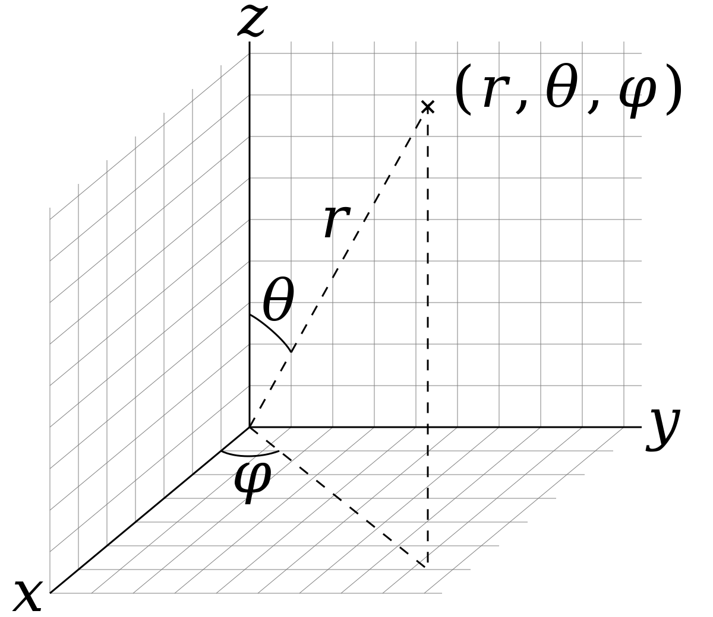

Coordinate Conversion Functions¶
This functions are used to convert between different coordinate systems (e.g. from cartesian to polar, from polar to cartesian, etc.). The functions are implemented in a way that they can be used with numpy arrays. or each coordinate conversion its Jacobian is also implemented. This functions are required to convert from the observation space (the coordinates in which the features are observed) to the storage space (the coordinates in which the features are stored in the map). For instance, if the features are observed in polar coordinates, but stored in cartesian coordinates, the conversion from polar to cartesian is required.
Polar To Cartesian¶
- conversions.p2c(p)¶
Converts from a 2D Polar coordinate to its corresponding 2D Cartesian coordinate:
(1)¶\[\begin{split}p & = \begin{bmatrix} \rho \\ \theta \end{bmatrix} \\ c &= p2c \left(\begin{bmatrix} x \\ y \end{bmatrix} = \begin{bmatrix} \rho \cos(\theta) \\ \rho \sin(\theta) \end{bmatrix}\right)\end{split}\]- Parameters:
p – point in polar coordinates
- Returns:
point in cartesian coordinates
- conversions.J_p2c(p)¶
Jacobian of the 2D Polar to cartesian conversion:
(2)¶\[\begin{split}J_{p2c} = \begin{bmatrix} \frac{\partial x}{\partial \rho} & \frac{\partial x}{\partial \theta} \\ \frac{\partial y}{\partial \rho} & \frac{\partial y}{\partial \theta} \end{bmatrix} = \begin{bmatrix} \cos(\theta) & -\rho \sin(\theta) \\ \sin(\theta) & \rho \cos(\theta) \end{bmatrix}\end{split}\]- Parameters:
p – linearization point in polar coordinates
- Returns:
Jacobian matrix \(J_{p2c}\) (eq. (2))
Cartesian To Polar¶
- conversions.c2p(c)¶
2D Cartesian to polar conversion:
(3)¶\[\begin{split}c &= \begin{bmatrix} x \\ y \end{bmatrix} \\ p & = c2p\left(\begin{bmatrix} \rho \\ \theta \end{bmatrix} = \begin{bmatrix} \sqrt{x^2+y^2} \\ atan2(y,x) \end{bmatrix}\right)\end{split}\]- Parameters:
c – point in cartesian coordinates
- Returns:
point in polar coordinates
- conversions.J_c2p(c)¶
Jacobian of the 2D Cartesian to polar conversion:
(4)¶\[\begin{split}J_{c2p} = \begin{bmatrix} \frac{\partial \rho}{\partial x} & \frac{\partial \rho}{\partial y} \\ \frac{\partial \theta}{\partial x} & \frac{\partial \theta}{\partial y} \end{bmatrix} = \begin{bmatrix} \frac{x}{\sqrt{x^2+y^2}} & \frac{y}{\sqrt{x^2+y^2}} \\ -\frac{y}{x^2+y^2} & \frac{x}{x^2+y^2} \end{bmatrix}\end{split}\]- Parameters:
c – point in cartesian coordinates
- Returns:
Jacobian matrix \(J_{c2p}\) (eq. (4))
Spherical To Cartesian¶
- conversions.s2c(s)¶
- 
3D Spherical to cartesian conversion:
(5)¶\[\begin{split}s & = \begin{bmatrix} \rho \\ \theta \\ \varphi \end{bmatrix} \\ c &= s2c \left(\begin{bmatrix} x \\ y \\ z \end{bmatrix} = \begin{bmatrix} \rho \sin(\theta) \cos(\varphi) \\ \rho \sin(\theta) \sin(\varphi) \\ \rho \cos(\theta) \end{bmatrix}\right)\end{split}\]- Parameters:
s – point in spherical coordinates
- Returns:
point in cartesian coordinates
{kind=link}
- conversions.J_s2c(s)¶
Jacobian of the 3D Spherical to cartesian conversion:
(6)¶\[\begin{split}J_{s2c} = \begin{bmatrix} \frac{\partial x}{\partial \rho} & \frac{\partial x}{\partial \theta} & \frac{\partial x}{\partial \varphi} \\ \frac{\partial y}{\partial \rho} & \frac{\partial y}{\partial \theta} & \frac{\partial y}{\partial \varphi} \\ \frac{\partial z}{\partial \rho} & \frac{\partial z}{\partial \theta} & \frac{\partial z}{\partial \varphi} \end{bmatrix} = \begin{bmatrix} \sin(\theta)\cos(\varphi) & \rho\cos(\theta)\cos(\varphi) & -\rho\sin(\theta)\sin(\varphi) \\ \sin(\theta)\sin(\varphi) & \rho\cos(\theta)\sin(\varphi) & \rho\sin(\theta)\cos(\varphi) \\ \cos(\theta) & -\rho\sin(\theta) & 0 \end{bmatrix}\end{split}\]- Parameters:
s – linearization point in spherical coordinates
- Returns:
Jacobian matrix \(J_{s2c}\) (eq. (6))
Cartesian To Spherical¶
- conversions.c2s(c)¶
3D Cartesian to spherical conversion:
(7)¶\[\begin{split}c &= \begin{bmatrix} x \\ y \\ z \end{bmatrix} \\ s & = c2s \left(\begin{bmatrix} \rho \\ \theta \\ \varphi \end{bmatrix} = \begin{bmatrix} \sqrt{x^2+y^2+z^2} \\ atan2(\sqrt{x^2+y^2},{z}) \\ atan2({y},{x}) \end{bmatrix}\right)\end{split}\]- Parameters:
c – point in cartesian coordinates
- Returns:
point in spherical coordinates
- conversions.J_c2s(c)¶
Jacobian of the 3D Cartesian to spherical conversion:
(8)¶\[\begin{split}J_{c2s} = \begin{bmatrix} \frac{\partial \rho}{\partial x} & \frac{\partial \rho}{\partial y} & \frac{\partial \rho}{\partial z} \\ \frac{\partial \theta}{\partial x} & \frac{\partial \theta}{\partial y} & \frac{\partial \theta}{\partial z} \\ \frac{\partial \varphi}{\partial x} & \frac{\partial \varphi}{\partial y} & \frac{\partial \varphi}{\partial z} \end{bmatrix} = \begin{bmatrix} \frac{x}{\sqrt{x^2+y^2+z^2}} & \frac{y}{\sqrt{x^2+y^2+z^2}} & \frac{z}{\sqrt{x^2+y^2+z^2}} \\ \frac{y}{x^2+y^2} & \frac{x}{x^2+y^2} & 0 \\ \frac{-x z}{(x^2+y^2)\sqrt{x^2+y^2}} & \frac{-y z}{(x^2+y^2)\sqrt{x^2+y^2}} & \frac{\sqrt{x^2+y^2}}{x^2+y^2} \end{bmatrix}\end{split}\]- Parameters:
c – linearization point in cartesian coordinates
- Returns:
Jacobian matrix \(J_{c2s}\) (eq. (8))
Identity Conversion¶
- conversions.v2v(v)¶
Identity transformation. Returns the same vector.
- Parameters:
v – input vector
- Returns:
output vector
- conversions.J_v2v(v)¶
Jacobian of the identity transformation. Returns the identity matrix of the same dimensionality as the input vector.
- Parameters:
v – input vector
- Returns:
Identity matrix of the same dimensionality as the input vector.